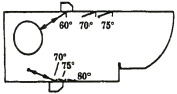
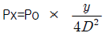
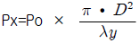

초음파비파괴검사산업기사 (2017-03-05 기출문제)
1과목: 비파괴검사 개론
1. 다음 초음파 중에서 전파속도가 가장 느린 파는?
- 종파
- 횡파
- 압축파
- 표면파
(정답률: 79%)

2. 다음 중 방사선투과검사로 가장 검출이 힘든 결함은?
- 판재의 두께 차이 측정
- 주조품의 탕계(cold shut) 검출
- 봉재의 심(seam) 검출
- 용접부의 수축 균열 검출
(정답률: 64%)
3. 이상적인 침투액의 특성에 대해 잘못 설명한 것은?
- 증발이나 건조가 빨라야 한다.
- 미세 개구부에 쉽게 침투되어야 한다.
- 얇은 도포막을 형성하여야 한다.
- 냄새가 없으며 불연소성이어야 한다.
(정답률: 80%)
4. 열처리의 영향에 따른 전기전도도의 변화를 측정할 수 있는 비파괴검사법은?
- 자분탐상시험
- 음향방출시험
- 와전류탐상시험
- 초음파탐상시험
(정답률: 89%)
5. 비파괴시험을 수행하는 기술자에게 가장 우선적으로 요구되는 사항은?
- 검사자는 성실성이 적더라도 능력만 있으면 된다.
- 검사의 정확도보다는 작업비용을 적게 들도록 한다.
- 시험한 제품의 안전성에 대한 책임감을 가져야 한다.
- 어떤 사정이 생기면 제조공정을 계획하고 비파괴검사를 실시하여야 한다.
(정답률: 83%)
6. Fe-C 상태도에서 공석반응이 일어나는 온도는 약 몇 ℃인가?
- 700℃
- 723℃
- 1147℃
- 1493℃
(정답률: 86%)
7. 금속 중에 0.01 ~ 0.1 ㎛ 정도의 미립자를 분산시켜, 모체 자체의 변형 저항을 높여 고온에서의 탄성률, 강도 및 크리프 특성을 개선하기 위해 개발된 재료는?
- FRM
- PSM
- FRS
- CFRP
(정답률: 53%)
8. 압력이 일정한 경우 A, B 합금에서 두 상이 공존하는 영역에서의 자유도는?
- 0
- 1
- 2
- 3
(정답률: 83%)
9. 초소성 재료의 특징을 설명한 것 중 틀린 것은?
- 외력을 받았을 때 슬립 변형이 쉽게 일어난다.
- 초소성 재료는 300 ~ 500% 이상의 연성을 가질 수 없다.
- 초소성 재료는 낮은 응력으로 변형하는 것이 특징이다.
- 초소성은 일정한 온도영역과 변형속도의 영역에서 나타난다.
(정답률: 64%)
10. 다음 중 대표적인 시효 경화성 합금은?
- Fe-C 합금
- Ni-Cu 합금
- Cu-Sn 합금
- Al-Cu-Mg-Mn 합금
(정답률: 90%)
11. Co계 주조 경질 합금으로 사용되는 공구재료는?
- 탄소강
- 게이지강
- 스텔라이트
- 구상흑연주철
(정답률: 56%)
12. 소성변형에 대한 설명으로 틀린 것은?
- 소성변형하기 쉬운 성질을 가소성이라 한다.
- 소성가공법에는 단조, 압연, 인발 등이 있다.
- 재료에 외력을 가했다가 외력을 제거하면 원상태로 되돌아 오는 것을 소성이라 한다.
- 가공으로 생긴 내부응력을 적당히 남게 하여 기계적 성질을 향상시킨다.
(정답률: 71%)
13. 주철을 파면에 따라 분류한 것이 아닌 것은?
- 회주철
- 백주철
- 반주철
- 가단주철
(정답률: 72%)
14. Al-Si계 합금에서 개량 처리를 하기 위해 사용되는 첨가제가 아닌 것은?
- 불화물
- 금속 Mn
- 금속 Na
- 수산화나트륨(NaOH)
(정답률: 63%)
15. 공구용 합금강에 요구되는 일반적인 특성으로 틀린 것은?
- 열처리성이 우수해야 한다.
- 마멸성 및 충격성이 커야 한다.
- 상온 및 고온에서 경도가 커야 한다.
- 피삭성이 좋고, 내마모성이 커야 한다.
(정답률: 83%)
16. AW 240, 정격 사용률이 50%인 용접기를 사용하여 200A로 용접할 때 이 용접기의 허용 사용률은?
- 54%
- 60%
- 72%
- 120%
(정답률: 80%)
17. 용접 변형에 대한 교정 방법에 속하지 않는 것은?
- 피닝법
- 점 수축법
- 덧살 올림법
- 직선 수축법
(정답률: 66%)
18. 다음 중 융접의 종류가 아닌 것은?
- 테르밋 용접
- 초음파 용접
- 피복 아크 용접
- 서브머지드 아크 용접
(정답률: 77%)
19. 용접 결함 중 구조상의 결함에 속하지 않는 것은?
- 변형
- 기공
- 언더컷
- 오버랩
(정답률: 74%)
20. 직류아크용접에서 정극성과 역극성을 비교했을 때 역극성의 특징으로 틀린 것은?
- 비드 폭이 좁다.
- 박판용접에 적합하다.
- 용접봉의 녹는 속도가 빠르다.
- 주철 및 고탄소강 용접에 적합하다.
(정답률: 63%)
2과목: 초음파탐상검사 원리 및 규격
21. 종파를 사용하여 두 재료를 초음파검사 할 때, 재료의 경계면에서 음압반사율이 가장 높은 것끼리 짝지은 것은?
- 물 ? 알루미늄
- 알루미늄 - 강
- 아크릴 ? 기름
- 기름 - 물
(정답률: 66%)
22. 2개의 탐촉자를 이용하여 주사하는 방법이 아닌 것은?
- 텐덤주사
- 좌우주사
- K주사
- V주사
(정답률: 81%)
23. 음향 이방성이 있는 재료의 초음파탐상검사에 관한 설명으로 틀린 것은?
- 강재 중에서 초음파의 음속이나 감쇠 등의 초음파 전파특성이 탐상방향에 따라 다른 것을 음향 이방성이라 한다.
- 초음파 전파특성이 현저히 다른 재료에는 음향 이방성에 대한 점검이 필요하다.
- 음향 이방성을 갖는 재료의 탐상에는 공칭굴절각이 70°인 탐촉자를 사용한다.
- TMCP강 등의 압연강판에서 주압연 방향(L방향)과 직각인 방향(C방향)은 초음파 전파특성이 현저하게 다를 수 있다.
(정답률: 76%)
24. 초음파 압전소자 중 내마모성이 낮아 수명이 짧지만, 가장 좋은 송신효율로 인해서 고감도 용도로 사용되는 것은?
- 니오비움산 리튬
- 니오비움산 납
- 티탄산바륨
- 황산리튬
(정답률: 81%)
25. 초음파탐상기의 성능을 최적으로 유지해야 하기 위해 중요하게 평가되어야 하는 항목으로 적합하지 않은 것은?
- 시간축 직선성
- 증폭 직선성
- 빔 편형각
- 분해능
(정답률: 81%)
26. 초음파탐상기의 이것을 높이게 되면 소인횟수가 많아지기 때문에 표시화면이 밝아지고, 자동탐상의 속도를 높일 수 있으나 너무 높이면 잔향에코가 나타날 수 있다. 이것은 무엇인가?
- 게이트(Gate)
- 거리진폭보상회로(DAC)
- 게인(Gain)
- 펄스반복주파수(PRF)
(정답률: 66%)
27. 경사각탐상에 사용하는 4가지 기본 주사방법이 아닌 것은?
- 전후주사
- 진자주사
- 독립주사
- 목돌림주사
(정답률: 65%)
28. 초음파탐상시험에 사용되는 표준시험편의 용도로 적절하지 않은 것은?
- 측정범위의 조정
- 탐상감도의 조정
- 탐상장치의 특성 및 성능 측정
- 탐상시간의 단축
(정답률: 92%)
29. 초음파의 음향 임피던스를 Z라고 하고 물질의 밀도를 ρ, 매질 내 초음파의 속도를 V라고 한다면 음향 임피던스를 구하는 공식은?
- Z = ρ ÷ V
- Z = ρ × V
- Z = 2ρ ÷ V
- Z = ρ × 2V
(정답률: 83%)
30. 초음파검사의 일반적인 장점과 단점에 대한 설명으로 적절하지 않은 것은?
- 내부결함의 위치, 크기 등을 정확히 측정할 수 있다.
- 초음파 전달효과가 커서 재료의 내부조직에 따른 영향이 작다.
- 검사자 또는 주변 사람에 대한 장애가 없다.
- 결함검출능력은 결함과 초음파 빔의 방향에 따른 영향이 크다.
(정답률: 72%)
31. 초음파 펄스반사법에 의한 두께 측정 방법(KS B 0356)에서 초음파의 음속이 5900m/s이고 초음파가 재료 속을 왕복하는 시간이 1×10-4초 일 때 측정물의 두께는?
- 약 10cm
- 약 20cm
- 약 30cm
- 약 50cm
(정답률: 33%)
32. 강 용접부의 초음파탐상 시험방법(KS B 0896)에서 요구하는 탐상기의 성능 점검 항목 중 장치 구입 시 및 12개월 이내마다 성능이 유지되고 있음을 점검하여 꼭 확인해야 할 대상이 아닌 것은?
- 감도 여유값
- 증폭 직선성
- 시간축의 직선성
- 전원전압의 변동에 대한 안정도
(정답률: 64%)
33. 보일러 및 압력용기에 대한 초음파탐상검사(ASME Sec.V Art.4)에 의해 탐상장치를 교정할 때 스크린 높이 직선성의 허용 범위는 전체 스크린 높이의 몇 % 오차 이내 이어야 하는가?
- 1
- 2
- 5
- 10
(정답률: 73%)
34. 금속재료의 펄스반사법에 따른 초음파탐상 시험방법 통칙(KS B 0817)에서 채택하고 있는 흠집의 지시 길이 측정 선정 규정은?
- 최대에코높이의 1/2을 넘는 범위의 탐촉자 이동거리
- DGS 도표의 기준에코높이까지 탐촉자 이동거리
- 최대에코높이의 -12dB를 넘는 범위의 탐촉자 이동거리
- 흠집에코높이의 범위 이내인 탐촉자 이동거리
(정답률: 78%)
35. 보일러 및 압력요기의 재료에 대한 초음파 탐상검사(ASME Sec.V Art.5)에서 스터드의 초음파탐상검사에서 사용하는 교정시험편이 안니 것은?
- A형
- B형
- C형
- D형
(정답률: 83%)
36. 보일러 및 압력용기에 대한 표준초음파탐상검사 (ASME Sec.V Art.23 SB-548)에서 압력용기용 알루미늄 합금판의 탐상검사를 수행할 수 있는 검사원의 기준은?
- ASNT-UT Level III 자격소지자
- ASNT-UT Level II 자격소지자
- ASNT-UT Level I 자격소지자
- 고용자의 서면기준 (written practice)에 따라 초음파탐상검사 자격이 인증된 자
(정답률: 74%)
37. 강 용접부의 초음파탐상시험방법 (KS B 0896)에 의하여 평판 맞대기 이음 용접부의 경사각 탐상중 판두께가 40mm를 초과하고 60mm 이하인 재료에 대한 초음파탐상방법으로 옳은 것은?
- 굴절각 71°를 사용하여 한면 양쪽에서 탐상한다.
- 굴절각 65°를 사용하여 한면 양쪽에서 탐상한다.
- 굴절각 45°를 사용하여 양면 한쪽에서 탐상한다.
- 굴절각 60° 또는 70°를 사용하여 한면 양쪽에서 탐상한다.
(정답률: 79%)
38. 금속재료의 펄스반사법에 따른 초음파탐상 시험방법 통칙(KS B 0817)에 규정된 탐상도형의 기본기호 중 틀린 것은?
- T : 송신펄스
- F : 흠집에코
- B : 표면에코(수침법)
- W : 측면에코
(정답률: 75%)
39. 압력용기용 강판의 초음파탐상 검사방법 (KS D 0233)에 의한 이진동자 수직탐촉자 사용 시 결함의 분류와 표시 기호의 설명이 옳은 것은?
- X주사 시 결함의 정도가 가벼움이고, DL선을 넘고 DM선 이하 시 표시기호는 △이다.
- X주사 시 결함의 정도가 중간이고, DM선을 넘고 DH선 이하시 표시기호는 ○ 이다.
- Y주사 시 결함의 정도가 가벼움이고, DC선을 넘고 DL선 이하 시 표시기호는 ○이다.
- Y주사 시 결함의 정도가 가벼움이고, DM선을 넘고 DH선 이하 시 표시기호는 △이다.
(정답률: 62%)
40. 보일러 및 압력용기에 대한 초음파탐상검사 (ASME Sec.V Art.4)에서 용접부에 대한 초음파 탐상시험 방법에 따라 허용값의 교정확인을 할 때 감도설정에 대해 감도교정을 수행하는 경우는?
- 진폭의 10% 또는 2dB 이상 변할 때
- 진폭의 20% 또는 2dB 이상 변할 때
- 진폭의 10% 또는 6dB 이상 변할 때
- 진폭의 20% 또는 6dB 이상 변할 때
(정답률: 61%)
3과목: 초음파탐상검사 시험
41. 굴절각70°인 경사각 탐촉자를 이용하여 직사법 및 1회 반사법으로 용접부를 탐상하려 한다. 측정범위를 125mm로 한다면, 탐상가능한 최대두께는 얼마인가?
- 21mm
- 25mm
- 40mm
- 42mm
(정답률: 45%)
42. 초음파탐상시험에서 일반적으로 사용되고 있는 결함크기의 정량적 평가법 중 에코의 전파시간차를 이용하는 방법에 해당하는 것은?
- AVG법
- F/Bf법
- 표면파법
- 최대에코높이법
(정답률: 30%)
43. 평판 맞대기 용접부를 경사각탐촉자로 탐상시 결함의 용접선 방향 길이를 측정하는 주사방법은?
- 전후주사
- 좌우주사
- 진자주사
- 목돌림 주사
(정답률: 60%)
44. 초음파탐상검사에 대한 설명 중 옳은 것은?
- 수직탐촉자는 입사각을 90°로 하여 종파를 재료에 투과시키는 것이다.
- 표면파를 발생시키는 탐촉자는 일반적인 경사각탐촉자 구조와 완전히 다르다.
- 경사각 탐촉자는 진동자 앞에 쐐기를 사용해 시험체 내부에 횡파를 투과시키는 것이다.
- 판파를 발생시키는 탐촉자는 경사각 탐촉자의 일종으로 종파의 다른 표현이다.
(정답률: 60%)
45. A스캔장비의 스크린에서 저면반사파의 강도(음압)를 나타내는 것은?
- 반사파의 폭
- 반사파의 위치
- 반사파의 거리
- 반사파의 높이
(정답률: 80%)
46. 대형 단강품 초음파 탐상에 있어 탐상기 화면에 임상에코가 발견되는 경우가 있다. 이러한 임상에코에 관한 설명으로 적절하지 않은 것은?
- 송신펄스 부근으로부터 연속적으로 나타난다.
- 탐촉자 위치를 약간 이동하면 미묘하게 변화하지만 전체의 형태는 거의 변하지 않는다.
- 협대역 탐촉자를 사용하면 광대역 탐촉자를 사용하는 경우에 비하여 에코높이가 줄어 S/N비가 좋아진다
- 임상에코는 높은 주파수를 사용하는 경우 잘 발생하며 주파수를 낮춰 검사하면 에코높이가 낮아지거나 소실된다.
(정답률: 72%)
47. 초음파탐상기에서 1초동안 발생하는 송신펄스의 수를 무엇이라고 하는가?
- 최대 펄스 주파수
- 최대 수신 주파수
- 펄스 반복 주파수
- 최대 사용 주파수
(정답률: 82%)
48. 접촉매질 선정 시 고려할 사항이 아닌 것은?
- 피검체의 표면조건
- 피검체의 온도
- 피검체의 크기
- 피검체와 접촉매질의 화학반응
(정답률: 78%)
49. 음향 임피던스의차가 가장 큰 물질의 구성인 것은?
- 철-알루미늄
- 철-물
- 철-글리세린
- 철-공기
(정답률: 65%)
50. 용접부를 사각탐상 하기 전에 인근의 모재를 수직 탐상하는 가장 중요 이유는 무엇인가?
- 모재의 라미네이션과 같은 결함 검출
- 열영향부의 용접결함 검출
- 모재의 표면조건 확인
- 모재의 음속 계산
(정답률: 65%)
51. 경사각 탐촉자의 입사점이나 굴절각을 측정하는 경우에 탐상기의 감도는 에코높이가 몇% 정도가 되도록 조정하면 좋은가?
- 10%
- 50-80%
- 25%
- 100%
(정답률: 77%)
52. 그림에서 탐촉자의 어느 특성을 측정하기 위한 것은?

- 굴절각 측정
- 감도 교정
- 분해능 측정
- 입사점 측정
(정답률: 79%)
53. 탐상면이 거친 경우 접촉매질을 선택하는 일반적인 기준은?
- 온도가 높은 것을 선택한다.
- 융점이 높은 것을 선택한다.
- 접촉각이 큰 것을 선택한다.
- 음향임피던스가 큰 것을 선택한다.
(정답률: 68%)
54. 경사각 탐상법에서 단일 탐촉자를 사용 시 다음 중 검출하기 어려운 결함은?
- 초음파의 진행방향과 수직으로 놓인 평면결함
- 비교적 큰 슬래그혼입
- 시험편 표면과 평행으로 놓인 결함
- 서로 인접한 작은 불연속면
(정답률: 74%)
55. 초음파탐상장치 중 전몰 수침법에 사용되는 조정기의 기능은?
- 횡파를 발생시킨다.
- 시험체를 고정시킨다.
- 음파의 빔 방향을 조절한다.
- 음파의 빔분산을 확산시킨다.
(정답률: 64%)
56. 경사각탐상시 동일한 빔 진행거리에서 시편두께가 증가할수록 스킵(skip)수의 변화는?
- 증가한다
- 1/4씩 증가한다.
- 감소한다
- 변하지 않는다.
(정답률: 56%)
57. 탄성파의 주파수가 어느 영역에 속할 때 보통 초음파라고 부르는가?
- 15 kHz - 20 kHz
- 20 kHz - 500 kHz
- 500 Hz - 1 kHz
- 1 kHz - 10 kHz
(정답률: 85%)
58. 초음파탐상기에 사용되는 1진동자 및 2진동자 탐촉자에 대한 설명으로 틀린 것은?
- 통상 1진동수직 탐촉자는 송신펄스폭이 넓기 때문에 근거리의 탐상이 어렵다.
- 2진동자탐촉자는 근거리 결함의 탐상에 유리하다.
- 2진동자에 의한 탐상도형에는 지연재 때문에 표면에코가 나타난다.
- 1진동자수직 탐촉자에 의한 직접 접촉법의 탐상도형에도 표면에코를 관측할 수 있다.
(정답률: 61%)
59. 초음파가 매질내의 원거리 음장 영역의 어느지점(x)에서의 음압을 나타내는 공식으로 옳은 것은? (단, Px : 거리y에서의 음압, Po : 진동자 전면에서 음압, y : 진동자로부터거리, λ : 파장, D : 진동자의 직경)


- Px=Po×λDy2
- Px=Po×λyD2
(정답률: 67%)
60. 용접결함 중 초음파탐상시험으로 검출하기 가장 어려운 것은?
- 용입불량
- 슬래그 개재물
- 미세표면 균열
- 기공
(정답률: 79%)